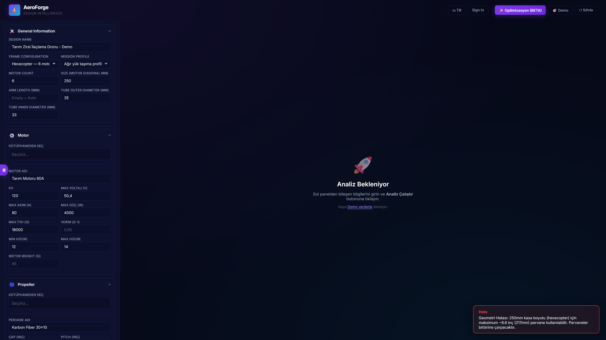

Mert Kutlukaya
Yazılım Geliştirici | Otonom Sistemler & Yapay Zeka
Mersin Üniversitesi CTIS son sınıf öğrencisi. Gömülü sistemler, otonom araçlar, siber güvenlik ve yazılım geliştirme alanlarında uzmanlaşıyorum.
// Initialize PID Controller for UAV void calculate_pid() { float error = setpoint - current_altitude; integral += error * dt; float derivative = (error - previous_error) / dt; float output = (Kp * error) + (Ki * integral) + (Kd * derivative); set_motor_speed(output); previous_error = error; } // Telemetry & Navigation loop while (system_active) { read_sensors(); calculate_pid(); }
Hakkımda
Merhaba, ben Mehmet Mert Kutlukaya. Mersin Üniversitesi Bilişim Sistemleri ve Teknolojileri (CTIS) 4. sınıf öğrencisiyim. Tutkum, yazılımı donanımla buluşturan otonom sistemler ve gömülü mühendislik projeleri geliştirmektir.
Özellikle İnsansız Hava Aracı (İHA) yazılımları, uçuş kontrol kartı konfigürasyonları (Pixhawk), sensör füzyonu, PID kontrolü ve gömülü bilgisayarlı görü (OpenCV/Raspberry Pi) konularında derin teknik tecrübeye sahibim. Çalışmalarımla TEKNOFEST Uluslararası İHA yarışmasında finalist oldum.
Yazılım dünyasının savunma hattında da aktif bir rol alıyorum; SiberVatan Programı kapsamında Alesta Takımı ile CTF yarışmasında Türkiye 3.lüğü elde ettim. Aynı zamanda GDG (Google Developer Groups) Mersin ekibinin çekirdek organizatör üyelerinden biri olarak etkinlik planlama, konuşmacı koordinasyonu ve topluluk yönetimi gibi sorumluluklar üstlenmekteyim.
Teknoloji Yığını (Tech Stack)
Gömülü Sistemler & Donanım
Yapay Zeka & Bilgisayarlı Görü
Yazılım (Web & Mobil)
DevOps & Araçlar
Eğitim
Bilişim Sistemleri ve Teknolojileri (CTIS)
Lisans (B.Sc.) — 4. Sınıf. Gömülü sistemler, yazılım mühendisliği, veri tabanı yönetimi ve bilgi güvenliği alanlarında kapsamlı akademik eğitim. Üniversite bünyesinde aktif olarak TEKNOFEST ve TÜBİTAK projelerine katılım sağlamaktayım.
Deneyim
Geliştirici Stajyeri
- Sensör telemetrisi ve PID kontrol algoritmalarının test edilip ince ayarlarının (tuning) yapılması.
- Donanım/yazılım entegrasyon testlerinin yürütülmesi ve sistem hatalarının diyagnostiği.
- Otonom uçuş dinamiklerinin sahada analiz edilmesi.
Oyun Geliştirici
- Oyun içi performans darbogazlarının tespit edilerek kod optimizasyonlarının yapılması.
- Kalite Güvence (QA) süreçlerine liderlik edilmesi.
- Oyun içi testlerin ve hata raporlamalarının yönetilmesi.
QA / Oyun Test Uzmanı
- Fonksiyonel ve performans testlerinin senaryolara uygun olarak gerçekleştirilmesi.
- Oyun motorundaki hataların detaylı şekilde dökümante edilerek raporlanması.
- Geliştirici ekiple koordineli çalışarak hata çözümlerinin doğrulanması.
Projeler
AeroForge DI
Yapay zeka destekli, tam teşekküllü fizik tabanlı İHA / Drone optimizasyon ve mühendislik platformu (SaaS).
- 12 Mühendislik Modeli (Momentum Teorisi, Peukert Batarya Modeli vb.)
- 236+ gerçek üretici donanım kütüphanesi (Motor, ESC, Pervane)
- Yapay zeka (AI) destekli maksimum uçuş süresi optimizasyonu
- Kapsamlı analiz raporları ve doğrudan ArduPilot .param dışa aktarma

AeroForge DI
Python ve FastAPI kullanılarak geliştirilen, 12 farklı mühendislik modeli ve 236+ bileşen kütüphanesine sahip, yapay zeka destekli Drone optimizasyon ve mühendislik platformu.
Otonom Drone
TEKNOFEST Uluslararası İHA Yarışması finalist projesi. Raspberry Pi ve Pixhawk altyapısıyla geliştirilen; otonom uçuş, PID kontrolü ve OpenCV ile hassas hedef tespiti yapabilen drone yazılımı.
Mars Rover
STM32 ve CAN Bus mimarisi kullanılarak geliştirilen robotik kol projesi. Gerçek zamanlı görüntü işleme, hassas PID eklem kontrolü ve ters kinematik algoritmalarını içerir.
PetCare App
Flutter ve Dart kullanılarak, Clean Architecture ve Bloc durum yönetimi (state management) prensipleriyle tasarlanan, çapraz platform (cross-platform) veteriner kliniği uygulaması.
Visual Vibrometry
TÜBİTAK 2242 kapsamında geliştirilen temassız kestirimci bakım sistemi. Video tabanlı titreşim analizleri ve Makine Öğrenmesi (ML) algoritmaları kullanılarak %86.7 doğruluk oranına ulaşıldı.
Oyun Geliştirme Portföyü
Mobil platformlar için Unity (C#) ile geliştirilen; bellek yönetimi, obje havuzlama (object pooling) ve hypercasual mekanik optimizasyonlarını içeren oyun projeleri koleksiyonu.
Ödüller
TEKNOFEST Uluslararası İHA Finalisti
2025SiberVatan CTF 3.lük Ödülü
2026TEKNOFEST Sosyal İnovasyon Finalisti
2026Sertifikalar
İletişim
Projeleriniz veya işbirliği için benimle iletişime geçebilirsiniz.
Konum
Mersin, Türkiye
Uzaktan (Remote), Hibrit veya Ofis çalışmaya açığım.